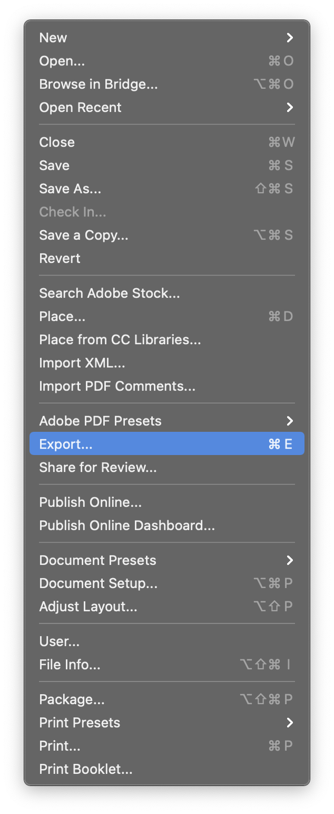
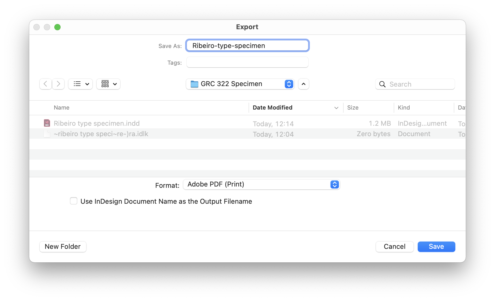
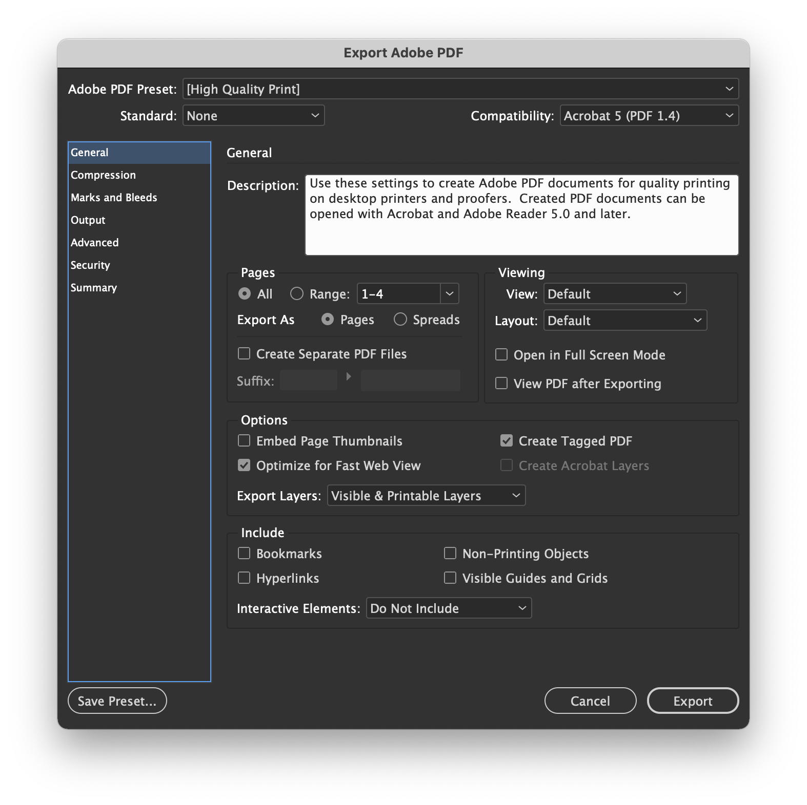
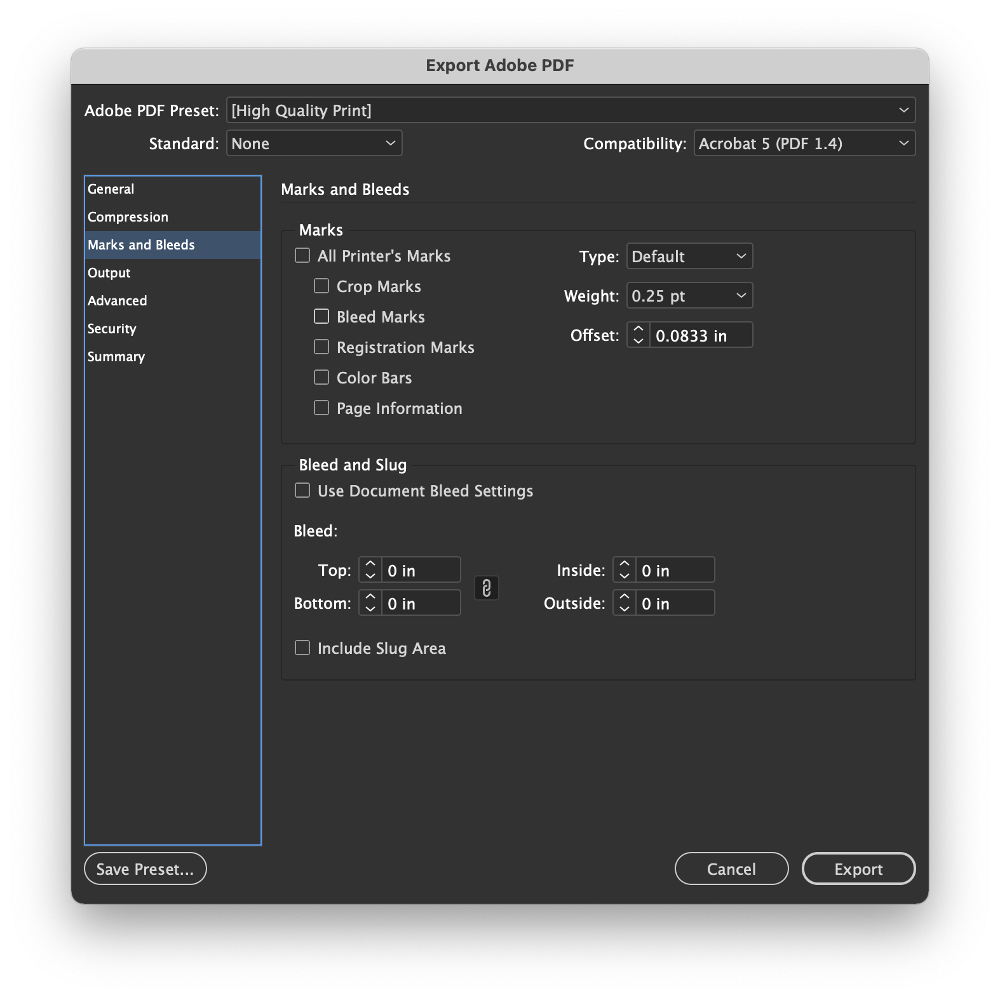

Please read my comments.
Make the necessary adjustments
follow the instructions for the submission.
You’ll submit two files.
File > Export

Choose the proper filename and save as Adobe PDF (Print).

Export all pages as single Pages, not Spreads.

You don’t need crop marks or bleedings.

Click on Export and you’re done with the first file.
Steps 2 and 4 are slightly different.
File > Export
Choose the proper filename and save as Adobe PDF (Print).
Export all pages as single Pages, not Spreads.
Important: You don’t need any marks, but you do need bleedings.
Click on Export and you’re done with the second file.
Are the facts context for the type family properly described and explained on the page? Did you include type designer, year, and location?
Does the visual language appropriately reflect the references on the image collection? Do the colors effectively enhance the quality of the typeface?
Can we have a good sense of the type family? Did you show the main characters? Are we able to see some nice details in its design?
Are the typefaces appropriate? Does the visual hierarchy reflect the content hierarchy? Do the paragraph lines have an appropriate length? Is the type size adequate for legibility? Is the leading adequate for the type size?
Two PDFs files, single pages, with and without bleeding?
Save an eight‑page PDF with the name convention lastname-type-specimen.pdf
Save an eight‑page PDF with the name convention lastname-type-specimen-bleed.pdf
Please check Canvas for deadline.
You have received feedback on the first round, but this final round is the one that will actually count.